What every button does¶
The panel is opened with Ctrl+Shift+M in the viewport — it pops up under the cursor. The shortcut is changed in the add-on preferences, and the Modular tab in the sidebar is switched on there too, if the popup does not suit you. The order of sections here follows the panel from top to bottom.
Project presets¶
The settings live in the scene; a preset carries them between files and artists. The preset row sits at the very top of the panel.
The preset menu¶

The list of project presets and what can be done with them.
When you need it. When the project has agreed on prefixes, units and an export folder, and everyone has to have the same.
What happens. Presets are plain JSON files in a folder named in the add-on preferences. Point it at a share or at the project and everyone on it sees the same presets. The menu button says which preset this scene was set from.
Worth knowing
At the bottom of the menu are Import from file and Send to file. A shared folder is tidier, but a file always works: import drops the preset into the folder and applies it at once, so next time it is in the list. A preset written by another version of the add-on is used as far as it is understood instead of being refused whole.
Save preset¶
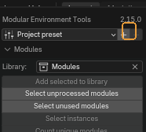
Writes the current project settings into the preset folder.
When you need it. Once the scene is set up for the project, save it so the others load the same thing.
Delete preset¶
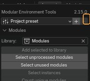
Removes the loaded preset from the folder.
Worth knowing
It deletes the file in the shared folder, not just your copy: on a network share the preset disappears for the whole project.
Library — the module library¶
A collection of unique meshes. Everything else in the scene is an instance, an object built on the same data.
Library¶
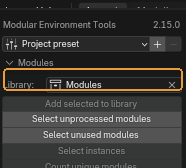
The collection holding the unique modules.
When you need it. Point it at whichever the project already uses. Left empty, it means "look for Modules".
Default: a collection named Modules, when one exists
Worth knowing
Almost every tool in this section depends on this field: a module is what lies here.
Add selected to library¶

Links the selected meshes into the module library.
When you need it. When a new module is finished and should become part of the kit.
Worth knowing
This is the only button allowed to create the library collection. The other tools say so plainly when they cannot find it, rather than making one behind your back.
Select unprocessed modules¶

Selects visible meshes whose data is not in the library.
When you need it. The "what is not filed yet" check. After it you can see which objects in the scene are on their own.
Select unused modules¶

Selects library modules that nothing in the scene is built from.
When you need it. Before handing the kit over: such a module was either forgotten or is not needed.
Select instances¶
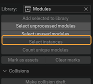
Selects every object in the scene built from the same meshes as the selected ones.
When you need it. To see how many times a module stands in the scene, and to get all its copies at once — before editing it, for instance.
Count unique modules¶
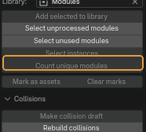
Counts how many unique meshes the selected objects share.
When you need it. A quick answer to "how many different modules is this piece of level built from". Changes nothing.
Mark as assets / Clear marks¶
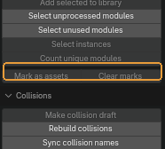
Marks the selected modules as assets and renders their previews, so they can be dragged in from the Asset Browser. The second button takes the mark off.
When you need it. When the kit is good enough for other people to use: from the browser a module is placed by dragging, without opening the source file.
Collisions¶
Draft collisions in the engine's convention: convex hulls with the UCX prefix, boxes with UBX.
Make collision draft¶
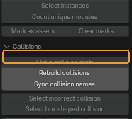
Turns each selected mesh into a draft collision, named and numbered the way the engine expects.
When you need it. The first step on collisions: get a hull that is then tuned by hand.
What happens. The copy is parented to the original, gets the collision material and a modifier stack — convex hulls per island, a simplification pass and a pull inwards. The stack stays live unless Apply modifiers is on.
Rebuild collisions¶
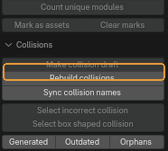
Regenerates the selected collisions from their sources.
When you need it. After editing a module. With nothing selected it rebuilds every outdated collision in the scene — which is the usual way to use it.
Sync collision names¶

Renames collisions after the module they are parented to, numbering them in order.
When you need it. Right after renaming modules. The engine ties a collision to its mesh by name, so a mismatch here is expensive.
Select incorrect collision¶

Looks through the selection for collision islands that are non-manifold or flattened.
When you need it. Before export. Such a hull behaves unpredictably in the engine.
What happens. Leaves the scene in Edit Mode with the offending vertices selected.
Select box shaped collision¶
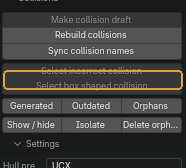
Selects collisions that are in fact plain axis-aligned boxes.
When you need it. So they can be renamed from the hull prefix to the box prefix: a box is cheaper for the engine.
Generated / Outdated / Orphans¶
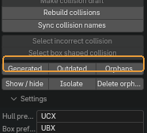
Three selections: everything the add-on generated; collisions whose source mesh was edited afterwards; collisions whose source is gone from the file.
When you need it. Outdated is the important one: it answers "what needs rebuilding". Orphans shows the leftovers of deleted modules.
Show / hide, Isolate, Delete orphans¶

Hide or show every collision in the scene; hide everything that is not one; delete the orphaned ones.
When you need it. Isolate is for looking at the hulls away from the geometry; press it again to bring the scene back.
Worth knowing
Delete orphans removes objects for good. Look at them with Orphans first.
Collision prefix and Box prefix¶
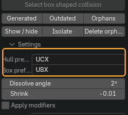
The name prefixes for a convex hull and for a box.
When you need it. The defaults are the Unreal convention. Change them if the engine on the project expects something else.
Default: UCX and UBX
The shape of the hull¶
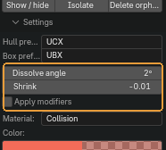
How far flat areas are simplified, how far the hull is pulled inside the mesh, and whether the stack is baked or left live.
When you need it. Shrink is negative: the hull is pulled inwards so it does not poke through the geometry.
Worth knowing
While Apply modifiers is off the stack stays live and the collision can be rebuilt. Switch it on only when the shape is final.
The collision material¶
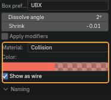
The material name, its viewport colour, and whether hulls are drawn as wireframe.
When you need it. Changing the colour repaints the collisions already in the scene. Wireframe is how the engine shows them; switch it off to see them solid.
Naming — sizes and prefixes in names¶
Axes and order¶
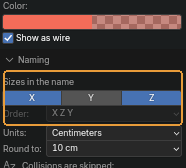
Which dimensions go into the name, and in which order.
Default: X and Z on, order XZY
Worth knowing
The order only matters with two or more axes on. It defaults to XZY rather than XYZ: in a modular kit width and height matter more than depth.
Units and rounding¶

What the size is written in, and the step it is rounded to.
When you need it. The rounding is a step, not a number of digits: at 10 the sizes land on tens of centimetres, which is what a modular grid wants.
Default: centimetres, step 10
Add size to names¶
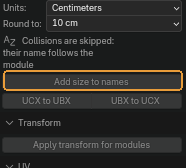
Writes the dimensions of the selected meshes into their names.
When you need it. When the kit is assembled and the name should say what size a module is.
Worth knowing
Running it again replaces the sizes instead of appending them, so the geometry can be edited and the tool run once more.
UCX to UBX and UBX to UCX¶

Swaps the collision prefix on the selected objects, either way.
When you need it. In pair with Select box shaped collision: find the boxes first, then move them to the box prefix.
Transform¶
Apply transform for modules¶

Applies rotation and scale to the selected objects and to every instance sharing their mesh.
When you need it. Before export: the engine expects a scale of one.
Worth knowing
A transform cannot be applied to a single instance — the data is shared — which is why the tool walks the whole group. Location is left alone.
UV¶
Sharp angle and Texel density¶
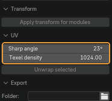
The angle above which an edge counts as a seam, and the texel density.
Default: 22.5° and 1024
Unwrap selected¶
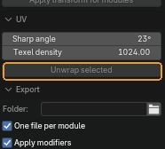
Marks seams along sharp edges and unwraps the selected meshes.
When you need it. A draft layout for a module, when speed matters more than hand-packing.
Worth knowing
World orientation and texel density go through ZenUV. Without it seams and unwrapping still work — the panel says so under the settings.
Export¶
Writing modules to FBX together with their collisions.
Where the files go¶

The export folder, and whether each module gets its own file or the whole selection goes into one.
When you need it. An engine usually wants a file per module, so the filename matches the asset name.
Default: one file per module; an empty folder means export next to the .blend
FBX settings¶

Axes, scale, and whether modifiers are exported evaluated.
Default: -Z forward, Y up, scale 1
Worth knowing
Apply modifiers is on: live collision stacks are exported evaluated, otherwise the engine would receive the source mesh instead of the hull.
Export selected modules¶
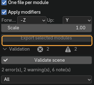
Writes the selected modules together with their collisions to FBX.
Validation¶
A pass over the modules and collisions of the scene, with a report you can walk through.
Validate scene¶

Runs the checks over modules and collisions and fills the report below.
When you need it. Before handing the scene over. The counters beside it show how many errors, warnings and notes were found.
The report filter¶
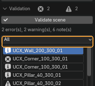
Which findings the list shows.
Default: all
The list of findings¶

The rows of the report: a severity icon, the object, and what was found.
When you need it. Clicking a row selects the object it is about.
Select, All alike, Clear¶
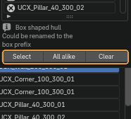
Select the object of the highlighted row; select every object with the same finding; empty the report.
When you need it. All alike is how you fix things in batches: the same mistake usually repeats across a kit.
Export report¶
Writes the report to JSON.
When you need it. When the result of a check is needed outside Blender — attached to a task, or read by a build.
Worth knowing
There is no button for it in the panel. The operator exists but is not exposed: reach it through search — F3 and "Export report".
Assembled from content/modular-environment-tools.en.yml. Screenshots taken in Modular Environment Tools 2.15.0.